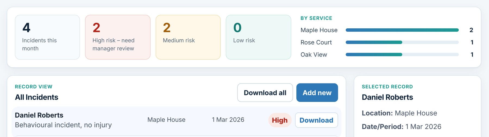
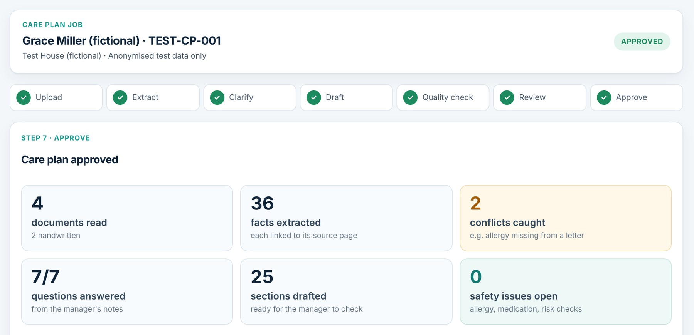

Reduce administration
Structured forms and AI-assisted drafts mean managers spend less time starting documents from scratch.
FYAM helps care providers cut admin, keep records consistent and stay ready for CQC inspection — with managers in control of every decision.
Book a Product Demo →
Care teams work under constant operational and regulatory pressure. FYAM turns information into clear, reviewable action.
Structured forms and AI-assisted drafts mean managers spend less time starting documents from scratch.
See risk levels, outstanding actions and compliance status across every service in one place.
AI drafts are always reviewed. Managers check, edit and approve every record before it is used.
Staff record what happened. Smart Summarise drafts the follow-up — risk level, suggested actions and learning points — ready for a manager to review and approve.


Upload the referral, the discharge letter and your own handwritten assessment notes. Smart Summarise reads them, flags anything that doesn't add up, and drafts all 25 sections, ready for you to check.
Smart Summarise brings incidents, onboarding and audits together, so your evidence is ready when you need it.

Pull incidents, audits, supervisions and training records into an evidence-led report draft for each service.

Track DBS checks and references for every new starter with clear red, amber and green status.
Also included: compliance audits and referrals, tracked the same way.
Care records carry real responsibility. Smart Summarise is built around that.
Everything the AI produces is marked as a draft until a manager has reviewed and approved it.
Review notes and approvals are recorded, so you can show who checked what, and when.
We'll walk you through how data is stored and protected during your demo — ask us anything.
A structured process that keeps professional judgement and accountability with the care provider.
Record the incident facts and immediate response in a consistent structure.
AI prepares a draft summary, risk level, review prompts and suggested actions.
A manager checks accuracy, adds context and decides what should be approved.
Actions are tracked and feed into your governance and CQC evidence.
A 30-minute walkthrough tailored to your services, your current processes and whether Smart Summarise is the right fit.
Book a 30-minute demo